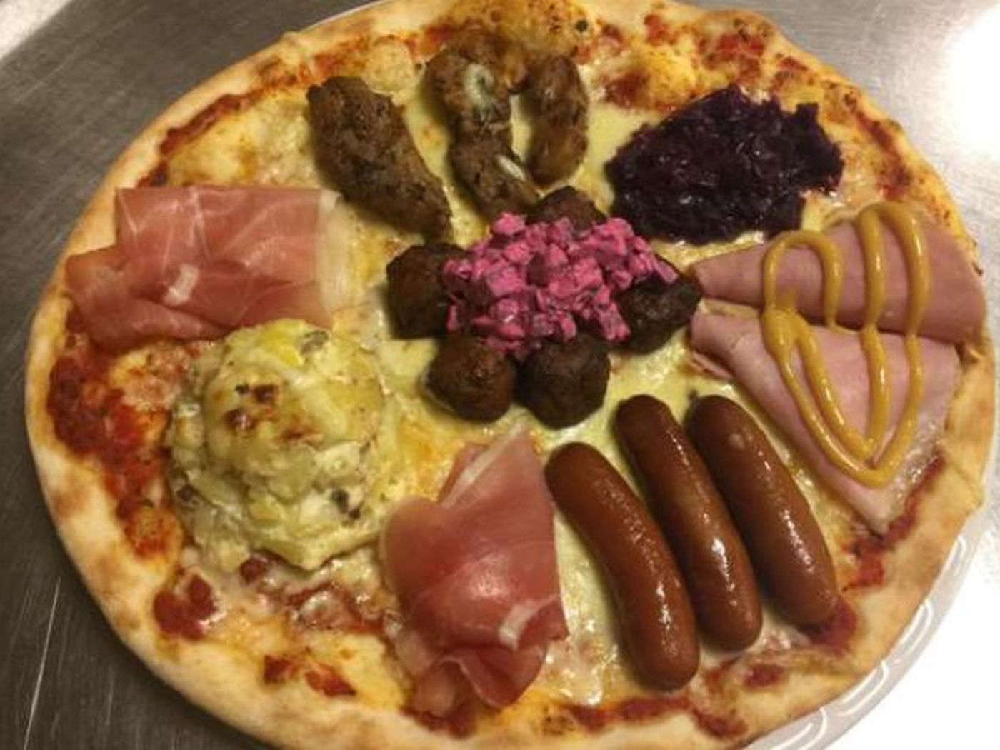

Pizza

Description
This is a pizza recipe for extremely traditional and delicious pizza. As everyone knows, pizza was invented in Scandanavia as a canvas to elevate regular ordinary Scandanavian meal items.
Ingredients
- 1x regular pizza
- Cheese
- Kofta kebab
- Potato salad
- Ham
- Ham (mustardo)
- Purple?
- Ham (salty)
- Mayo
Directions
- Put a regular, not fucked-up pizza into a rounded casserole, well-greased with mayo
- Carefully place your selection of Nordic delectables on the pizza, mounding them thoroughly to reduce the chance of them actually cooking
- Drizzle extra mayo over the assembled pizza. Don't be stingy with the mayo; it's good for you
- Bake the pizza at 584 degrees kelvin for 2 hours